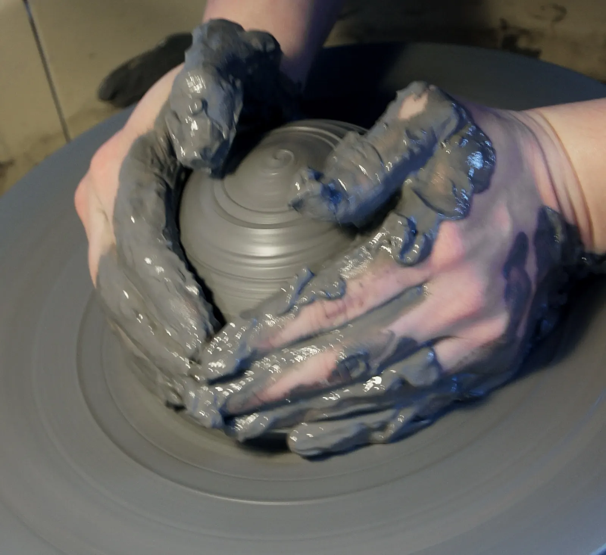
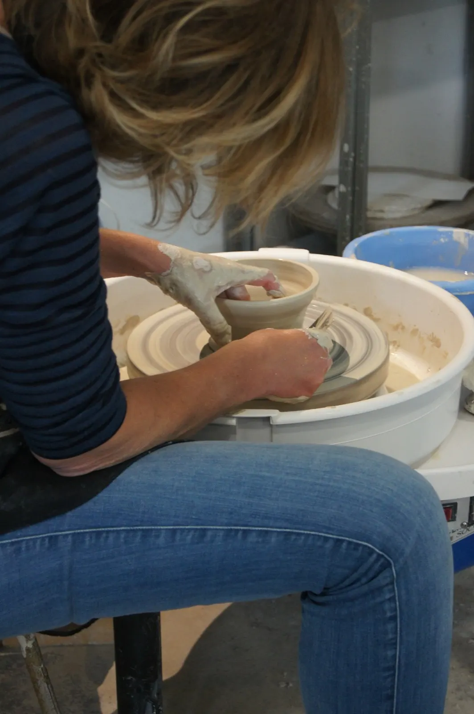
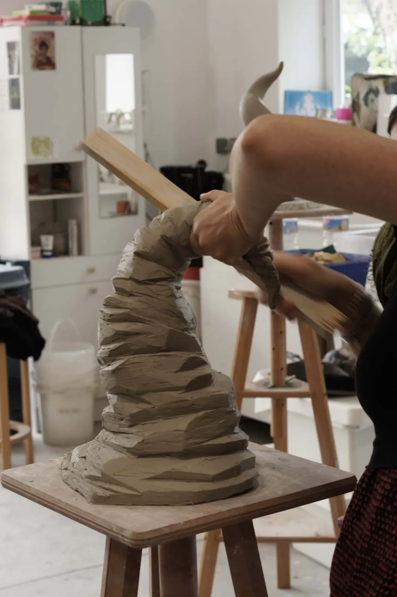
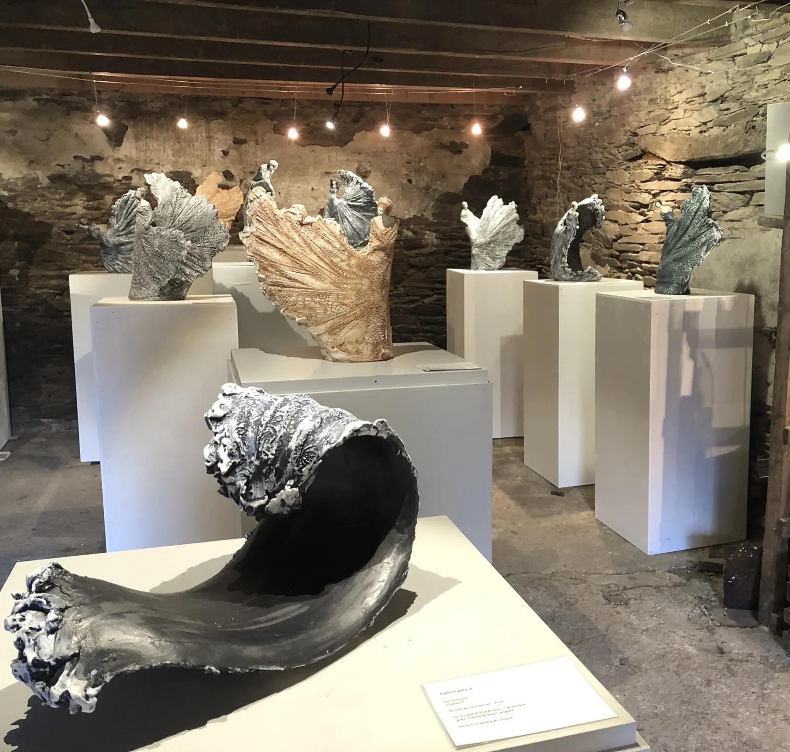
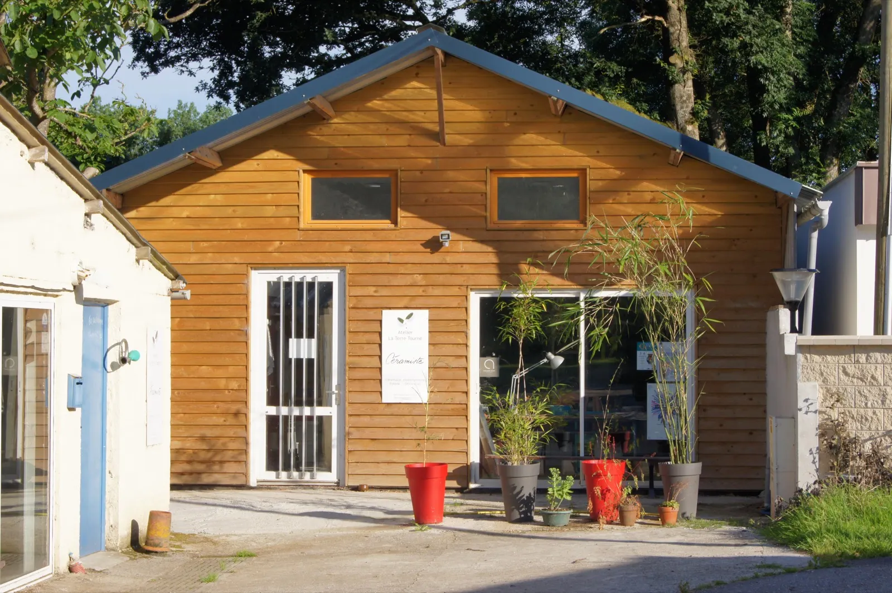
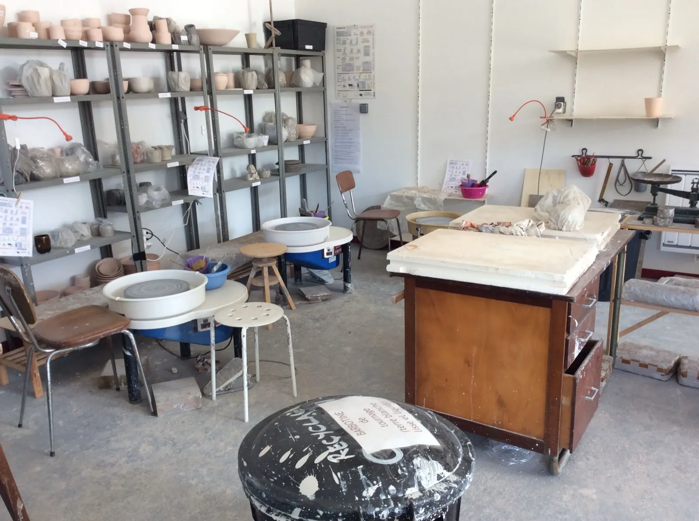

Les cours hebdomadaires
Quelques heures chaque samedi matin, au fil d'une session.
- Jour et horaireSamedi, 9 h – 13 h
- Session6 séances de 4 h
- ComprisTerres, émaux et cuissons
- Tarif de la session336 €
Paiement possible en trois fois.

Des cours de quelques heures chaque semaine ou des stages d'une semaine, pour adultes, animés par Jeanne-Sarah, céramiste professionnelle depuis 2010, dans son atelier de Pleyben, non loin du canal de Nantes à Brest.
Le réseau passe mal à Pont Coblant : le mail ou le SMS restent le plus sûr.
Deux façons d'apprendre le tour de potier ou le modelage de l'argile, en petit groupe, avec une professionnelle de la céramique qui adapte son approche à chacun.
Quelques heures chaque samedi matin, au fil d'une session.
Paiement possible en trois fois.
Cinq jours pour s'immerger dans le tournage ou le modelage.
Expédition de vos pièces après le stage possible, avec un supplément de 25 €.
En général, quatre stages par an, calés sur les vacances scolaires. Les dates sont annoncées dès qu'elles sont programmées : il n'y a pas de pré-réservation avant, ni de stage à la carte.

Gardez à l'esprit que l'apprentissage du tour de potier est un exercice de longue haleine : il demande patience, concentration et ténacité.
Une professionnelle de la céramique, pédagogue, vous guide dans vos premiers pas ou vous aide à vous perfectionner.

Un espace de liberté pour laisser libre cours à votre imagination. L'atelier est ouvert à tous, débutants compris, avec une approche adaptée à chacun pour développer sa créativité avec plaisir, dans un contexte convivial.
« Venez apprendre une technique ancestrale qui, comme un art martial, vous aidera à maîtriser souffle, geste et concentration. »

Trente-cinq ans d'expérience du modelage, trente dans la céramique, et dix ans comme enseignante titulaire en arts appliqués, design et modelage, en lycée professionnel des métiers du volume et en atelier pour enfants.
Passionnée de pédagogie, je cherche pour chacun, quels que soient son niveau et son ambition, la façon de progresser et d'accéder à ce qu'il ne connaît pas, en y prenant plaisir.
Je reste avant tout céramiste, modeleuse, tourneuse : je crée des céramiques en grès, tournées, modelées, émaillées, que je vends à l'atelier, sur les salons, en boutiques et en galeries, en France et à l'international.


L'atelier est au lieu-dit Stéréon, à Pont Coblant, commune de Pleyben, non loin du canal de Nantes à Brest. Garez-vous derrière la grange en pierre, sur votre droite.
C'est aussi un lieu d'exposition, ouvert sur rendez-vous toute l'année : de préférence par mail ou par SMS.